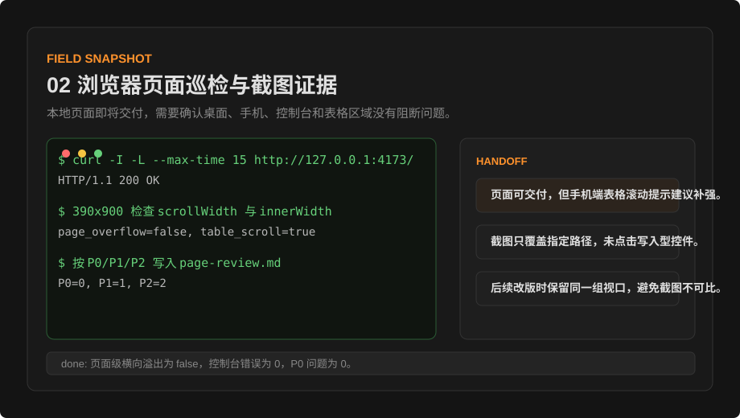
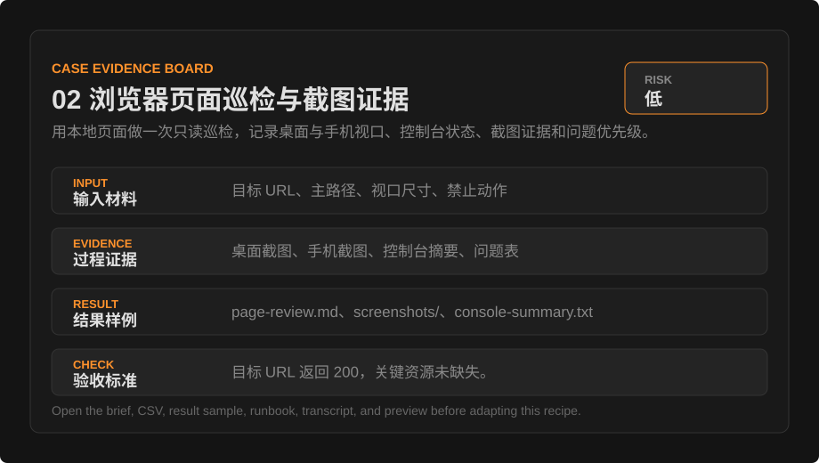

中文
实战案例
02 浏览器页面巡检与截图证据
用本地页面做一次只读巡检，记录桌面与手机视口、控制台状态、截图证据和问题优先级。
任务背景
用本地页面做一次只读巡检，记录桌面与手机视口、控制台状态、截图证据和问题优先级。
输入材料
本次任务先锁定可读取材料、禁止动作和输出格式，再开始生成或检查。
- 目标页面为本地预览地址，不输入账号密码，不提交表单。
- 视口固定为桌面 1440x1000、手机 390x900。
- 主路径只点击导航和展开控件，不触发写入、购买、删除或授权。
巡检任务
URL: http://127.0.0.1:4173/recipes/pages-deploy-diagnosis.html
主路径: 打开页面、切换手机视口、展开导航、检查证据表
禁止动作: 不提交表单、不修改数据、不触发账号动作运行环境
- 服务地址：
http://127.0.0.1:4173/。 - 检查页面：首页、案例总览、一个案例详情、使用规范页。
- 问题分级：阻断、影响体验、文字瑕疵、后续优化。
实测快照
这一屏只放能证明任务实际跑过的现场信号：为什么开始、用了什么、第一处异常是什么、最后凭什么交付。
实测材料包
每个案例都提供一组可打开的演示文件：输入任务单、证据表、结果片段、验收 runbook、执行转录、交付预览、前后对比、质量评分、操作回放、人工交接、现场图、验收总账和证据看板。读者可以先看材料，再替换成自己的任务。
{kind=link}
{kind=link}


操作剧本
- 先读取页面标题、主标题、导航和核心按钮，确认可见层级。
- 分别截图桌面和手机视口，不能用一张截图代替全部设备。
- 记录控制台错误、网络失败和横向溢出结果。
命令回放
命令回放把动作、观察输出和证据文件放在同一张表里。读者可以直接判断这次任务是否有可复核链路。
| 阶段 | 命令/动作 | 观察输出 | 证据文件 |
|---|---|---|---|
| 服务确认 | curl -I -L --max-time 15 http://127.0.0.1:4173/ | HTTP/1.1 200 OK | console-summary.txt |
| 手机视口 | 390x900 检查 scrollWidth 与 innerWidth | page_overflow=false, table_scroll=true | case-mobile-390.png |
| 问题归档 | 按 P0/P1/P2 写入 page-review.md | P0=0, P1=1, P2=2 | page-review.md |
现场记录
现场记录按时间保留关键判断点，帮助读者理解这次任务为什么能交付。
| 时间 | 动作 | 材料/证据 | 判断 |
|---|---|---|---|
| 00:00 | 锁定任务范围和禁止动作 | 目标 URL、主路径、视口尺寸、禁止动作 | 可执行 |
| 00:08 | 核对运行入口与材料位置 | 本地页面 + 浏览器检查 | 通过 |
| 00:22 | 采集过程证据并形成表格 | 桌面截图、手机截图、控制台摘要、问题表 | 已留痕 |
| 00:35 | 整理交付物、失败修正和验收命令 | page-review.md、screenshots/、console-summary.txt | 待人工终审 |
执行转录
执行转录把关键命令、观察、失败点、修正动作和终审判断串成连续记录，方便复盘具体过程。
00:00 读取任务单，确认材料范围：目标 URL、主路径、视口尺寸、禁止动作
00:04 锁定禁止动作：不覆盖原文件，不扩大权限，不跳过人工确认
00:08 运行/人工步骤：curl -I -L --max-time 15 http://127.0.0.1:4173/
00:14 观察：桌面首屏 -> 主标题、侧栏和任务状态面板可见；状态：通过
00:22 运行/人工步骤：浏览器桌面视口：1440x1000，截图 home-desktop-1440.png。
00:29 观察：手机视口 -> 无横向滚动，导航按钮可展开；状态：通过
00:36 发现失败点：只看 DOM；现象：DOM 文本正常但手机截图里按钮换行拥挤
00:42 修正动作：截图成为必检证据
00:50 产出交付物：page-review.md、screenshots/、console-summary.txt
00:55 验收判断：目标 URL 返回 200，关键资源未缺失。过程证据
下面的表格记录本次任务如何判断完成，而不是只描述最终结果。
| 检查点 | 观察结果 | 证据文件 | 状态 |
|---|---|---|---|
| 桌面首屏 | 主标题、侧栏和任务状态面板可见 | home-desktop-1440.png | 通过 |
| 手机视口 | 无横向滚动，导航按钮可展开 | case-mobile-390.png | 通过 |
| 证据表 | 表格在手机端可横向滚动，未撑破页面 | case-table-mobile.png | 通过 |
| 控制台 | 无 JavaScript 错误，资源均返回 200 | console-summary.txt | 通过 |
交付预览
交付预览把结果、证据、修正和终审动作放在同一屏，便于快速判断能不能交给下一个人复核。
前后对比
前后对比把原始问题、修正动作、交付后状态和判定依据放在同一张表里，用来判断这篇案例是否真的完成了闭环。
| 阶段 | 问题/状态 | 改进动作 | 判定依据 |
|---|---|---|---|
| 任务前 | DOM 文本正常但手机截图里按钮换行拥挤 | 截图成为必检证据 | home-desktop-1440.png |
| 过程修正 | 第一次截图无法判断视口 | 统一使用页面加视口命名 | case-mobile-390.png |
| 交付后 | page-review.md P0 阻断：0 P1 体验影响：1 - 手机端证据表需要明显滚动提示 P2 文字瑕疵：2 - 两处按钮文案可缩短 通过项：本地服务 200，桌面无重叠，手机无横向页面溢出 | 目标 URL 返回 200，关键资源未缺失。 | page-review.md、screenshots/、console-summary.txt |
质量评分
质量评分不代表绝对正确，只用来快速查看材料边界、证据强度、复测清晰度和交付成熟度是否达标。
验收总账
验收总账把这篇案例的材料数量、证据行、复跑命令、人工交接和现场信号压缩成可复核记录。
| 总账项 | 记录 |
|---|---|
| 第一信号 | 手机截图里表格可滚动，但缺少明显滚动提示。 |
| 完成信号 | 页面级横向溢出为 false，控制台错误为 0，P0 问题为 0。 |
| 风险等级 | 低 |
| 总账文件 | 12-acceptance-ledger.json |
结果样例
结果样例保留可复核字段、文件名和待确认项，便于另一个人接手检查。
page-review.md
P0 阻断：0
P1 体验影响：1 - 手机端证据表需要明显滚动提示
P2 文字瑕疵：2 - 两处按钮文案可缩短
通过项：本地服务 200，桌面无重叠，手机无横向页面溢出失败与修正
| 失败点 | 现象 | 修正动作 |
|---|---|---|
| 只看 DOM | DOM 文本正常但手机截图里按钮换行拥挤 | 截图成为必检证据 |
| 截图命名混乱 | 第一次截图无法判断视口 | 统一使用页面加视口命名 |
| 表格撑宽 | 证据表在 390px 下撑出页面 | 为表格容器启用横向滚动 |
风险边界
- 只读页面状态，不提交表单、不删除、不购买、不授权。
- 截图前确认没有多余个人信息或账号标识。
- 只记录可复核现象，不推断未点击路径的结果。
人工交接
这一段明确哪些内容还需要用户或负责人判断，避免把自动整理结果误当成最终决定。
- 页面可交付，但手机端表格滚动提示建议补强。
- 截图只覆盖指定路径，未点击写入型控件。
- 后续改版时保留同一组视口，避免截图不可比。
验收标准
- 目标 URL 返回 200，关键资源未缺失。
- 桌面和手机截图都能证明页面主要内容可见。
- 问题表包含位置、现象、截图名、建议和优先级。
- 未触发任何会改变数据或账号状态的动作。
curl -I -L --max-time 15 http://127.0.0.1:4173/浏览器桌面视口：1440x1000，截图 home-desktop-1440.png。浏览器手机视口：390x900，检查 document.documentElement.scrollWidth 是否大于 window.innerWidth。
可复用任务单
把下面任务单作为起点，替换材料、路径、限制和验收方式后再执行。
请打开这个本地页面做只读巡检，先列出检查区域和禁止动作。
请分别检查桌面和手机视口，输出截图清单、控制台摘要和问题表。
不要提交表单、不要修改数据、不要触发账号动作。文档质量验收标准
本页只有在读者能按步骤执行、识别风险、产出交付物并完成验收时才算达标。
- 中文和英文信息一致，没有遗漏关键限制。
- 读者能根据本页完成一个可回退的低风险任务。
- 任务结束后有输出、证据和待确认事项。
- 涉及动态事实时，读者能回到官方文档复核。
English
Recipes
02 Browser Page Review with Screenshot Evidence
Run a read-only review of a local page, recording desktop and mobile viewports, console state, screenshot evidence, and issue priority.
Task Background
Run a read-only review of a local page, recording desktop and mobile viewports, console state, screenshot evidence, and issue priority.
Input Materials
This task first locks readable materials, prohibited actions, and output format before generation or inspection.
- The target page is a local preview URL; no credentials are entered and no forms are submitted.
- Viewports are fixed at desktop 1440x1000 and mobile 390x900.
- The primary path clicks only navigation and expand controls, without write, purchase, delete, or authorization actions.
Review task
URL: http://127.0.0.1:4173/recipes/pages-deploy-diagnosis.html
Primary path: open page, switch to mobile viewport, expand navigation, inspect evidence table
Prohibited actions: do not submit forms, change data, or trigger account actionsRun Environment
- Service URL:
http://127.0.0.1:4173/. - Checked pages: home, recipe index, one recipe detail, and usage policy.
- Issue levels: blocking, experience impact, copy polish, and follow-up improvement.
Run Snapshot
This panel keeps only field signals that prove the task actually ran: why it started, what was used, the first abnormal signal, and why it was deliverable.
Lab Artifact Pack
Every recipe includes openable demo files: input brief, evidence table, result sample, acceptance runbook, execution transcript, delivery preview, before/after file, quality scorecard, operation replay, human handoff, field snapshot, acceptance ledger, and evidence board. Readers can inspect the pack before adapting it to their own task.
Operating Script
- Read page title, main heading, navigation, and primary buttons first to confirm visible hierarchy.
- Capture desktop and mobile screenshots separately; one screenshot cannot represent all devices.
- Record console errors, network failures, and horizontal overflow results.
Command Replay
Command replay puts action, observed output, and evidence file in one table so readers can judge whether the task has a reviewable chain.
| Stage | Command / Action | Observed Output | Evidence File |
|---|---|---|---|
| Service check | curl -I -L --max-time 15 http://127.0.0.1:4173/ | HTTP/1.1 200 OK | console-summary.txt |
| Mobile viewport | Check scrollWidth and innerWidth at 390x900 | page_overflow=false, table_scroll=true | case-mobile-390.png |
| Issue filing | Write P0/P1/P2 issues to page-review.md | P0=0, P1=1, P2=2 | page-review.md |
Run Log
The run log preserves key decisions by time so readers can see why the task was deliverable.
| Time | Action | Material / Evidence | Decision |
|---|---|---|---|
| 00:00 | Locked task scope and prohibited actions | Target URL, primary path, viewport sizes, and prohibited actions | Ready |
| 00:08 | Checked entry point and material location | Local page plus browser inspection | Pass |
| 00:22 | Captured evidence and built the table | Desktop screenshot, mobile screenshot, console summary, and issue table | Recorded |
| 00:35 | Prepared deliverables, corrections, and acceptance commands | page-review.md, screenshots/, and console-summary.txt | Human final review |
Execution Transcript
The transcript turns key commands, observations, failure, correction, and final decision into a continuous record for process review.
00:00 Read work order and confirm material scope: Target URL, primary path, viewport sizes, and prohibited actions
00:04 Locked prohibited actions: do not overwrite originals, expand permissions, or skip human confirmation
00:08 Run/manual step: curl -I -L --max-time 15 http://127.0.0.1:4173/
00:14 Observation: Desktop first view -> Main heading, sidebar, and task status panel are visible; status: Pass
00:22 Run/manual step: Browser desktop viewport: 1440x1000, capture home-desktop-1440.png.
00:29 Observation: Mobile viewport -> No horizontal scrolling; nav button expands; status: Pass
00:36 Failure found: DOM-only review; symptom: DOM text was fine but mobile screenshot showed cramped button wrapping
00:42 Correction: Make screenshots mandatory evidence
00:50 Deliverables prepared: page-review.md, screenshots/, and console-summary.txt
00:55 Acceptance decision: Target URL returns 200 and key assets are not missing.Evidence Trail
The table below records how this task judged completion instead of only describing the final result.
| Checkpoint | Observation | Evidence file | Status |
|---|---|---|---|
| Desktop first view | Main heading, sidebar, and task status panel are visible | home-desktop-1440.png | Pass |
| Mobile viewport | No horizontal scrolling; nav button expands | case-mobile-390.png | Pass |
| Evidence table | Table scrolls horizontally on mobile without breaking the page | case-table-mobile.png | Pass |
| Console | No JavaScript errors; assets return 200 | console-summary.txt | Pass |
Delivery Preview
The delivery preview puts result, evidence, correction, and final review on one screen so another person can quickly judge reviewability.
Before / After
The before/after table puts the initial issue, correction, after state, and decision basis together to judge whether the recipe truly closed the loop.
| Stage | Issue / State | Improvement | Decision Basis |
|---|---|---|---|
| Before | DOM text was fine but mobile screenshot showed cramped button wrapping | Make screenshots mandatory evidence | home-desktop-1440.png |
| Correction | First screenshot names did not show viewport | Use page plus viewport in filenames | case-mobile-390.png |
| After | page-review.md P0 blocking: 0 P1 experience impact: 1 - mobile evidence table needs a clearer scroll cue P2 copy polish: 2 - two button labels can be shortened Passed checks: local service 200, no desktop overlap, no mobile page overflow | Target URL returns 200 and key assets are not missing. | page-review.md, screenshots/, and console-summary.txt |
Quality Scorecard
The scorecard is not an absolute truth; it quickly shows whether material boundary, evidence strength, retest clarity, and delivery maturity meet the bar.
Acceptance Ledger
The acceptance ledger compresses artifact count, evidence rows, rerun commands, human handoff, and field signals into a reviewable record.
| Ledger Item | Record |
|---|---|
| First Signal | The mobile screenshot showed the table could scroll, but the scroll cue was weak. |
| Done Signal | Page-level horizontal overflow was false, console errors were 0, and P0 issues were 0. |
| Risk Level | Low |
| Ledger File | 12-acceptance-ledger.json |
Result Sample
The result sample keeps reviewable fields, filenames, and confirmation items so another person can inspect it.
page-review.md
P0 blocking: 0
P1 experience impact: 1 - mobile evidence table needs a clearer scroll cue
P2 copy polish: 2 - two button labels can be shortened
Passed checks: local service 200, no desktop overlap, no mobile page overflowFailures and Corrections
| Failure | Symptom | Correction |
|---|---|---|
| DOM-only review | DOM text was fine but mobile screenshot showed cramped button wrapping | Make screenshots mandatory evidence |
| Screenshot naming drift | First screenshot names did not show viewport | Use page plus viewport in filenames |
| Table width issue | Evidence table stretched beyond 390px | Enable horizontal scrolling on table containers |
Risk Boundaries
- Read page state only; do not submit, delete, purchase, or authorize.
- Before screenshots, confirm no unnecessary personal data or account identifiers are visible.
- Record reviewable observations only; do not infer results for paths not clicked.
Human Handoff
This section states what still requires user or owner judgment, so automated organization is not mistaken for a final decision.
- The page is deliverable, but the mobile table scroll cue should be improved.
- Screenshots cover only the specified path; write actions were not clicked.
- Keep the same viewports in later redesigns so screenshots remain comparable.
Acceptance Criteria
- Target URL returns 200 and key assets are not missing.
- Desktop and mobile screenshots prove primary content is visible.
- Issue table includes location, symptom, screenshot name, recommendation, and priority.
- No action that changes data or account state is triggered.
curl -I -L --max-time 15 http://127.0.0.1:4173/Browser desktop viewport: 1440x1000, capture home-desktop-1440.png.Browser mobile viewport: 390x900, check whether document.documentElement.scrollWidth is greater than window.innerWidth.
Reusable Work Order
Use the work order below as a starting point, then replace materials, paths, constraints, and acceptance method before running it.
Open this local page for read-only review and first list checked areas and prohibited actions.
Check desktop and mobile viewports separately, then output screenshot inventory, console summary, and issue table.
Do not submit forms, modify data, or trigger account actions.Documentation Quality Acceptance Criteria
This page meets the documentation standard only when readers can follow the procedure, identify risks, produce deliverables, and complete acceptance checks.
- Chinese and English content are equivalent and do not omit critical constraints.
- A reader can complete a reversible low-risk task using this page.
- The task ends with output, evidence, and confirmation items.
- For dynamic facts, the reader can verify against official documentation.